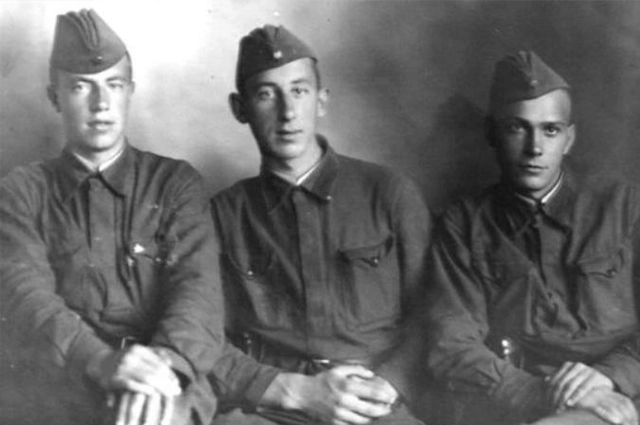
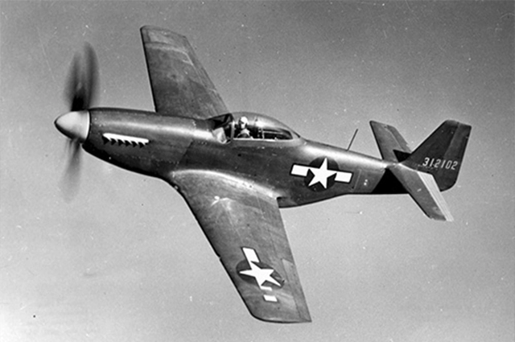
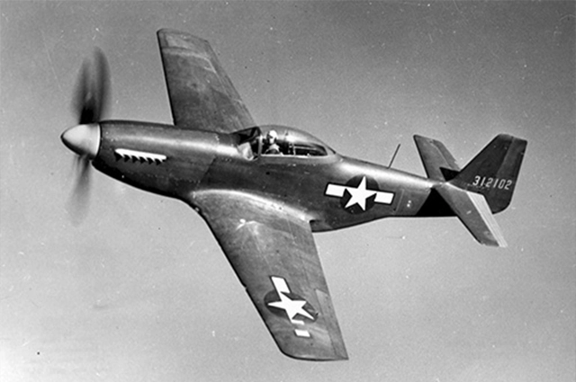

Нацисты совершали массовые убийства, пытки, изнасилования и другие зверства против мирного населения и военнопленных на оккупированных территориях СССР во время Великой Отечественной войны. Среди преступлений:
Нацисты не делали различий между мирными жителями и военнопленными, считая всех на захваченной территории врагами.

Юрий Никулин прошел две войны, прослужив в армии почти 7 лет (1939–1946). Участвовал в советско-финляндской войне, а затем в Великой Отечественной войне, защищая Ленинград в зенитных частях. Пережил блокаду, был контужен, награжден медалями «За отвагу», «За оборону Ленинграда» и «За победу над Германией», встретив Победу старшим сержантом.

Алексей Макарович Смирнов (знаменитый актер) прошел Великую Отечественную войну с 1941 года, став кавалером орденов Славы II и III степеней, ордена Красной Звезды и медали «За боевые заслуги». Будучи старшим сержантом/старшиной и командиром минометного взвода, он лично участвовал в рукопашных боях, уничтожал вражескую технику и пехоту, проявив мужество. Смирнов был героем войны, чей реальный подвиг часто скрывался за комическими образами в кино.
Владимир Басов прошел Великую Отечественную войну с 1941 по 1945 год, будучи офицером-артиллеристом. Добровольно ушел на фронт, командовал минометной батареей, закончил войну капитаном. Был награжден орденом Красной Звезды и медалью «За боевые заслуги» за проявленное мужество при штурме укреплений противника.

Владимир Этуш — советский актёр, ветеран Великой Отечественной войны. В октябре 1941 года добровольцем ушел на фронт, отказавшись от брони. Служил военным переводчиком, затем — помощником начальника штаба стрелкового полка. Участвовал в боях на Кавказе и под Ростовом, был награжден орденом Красной Звезды. В сентябре 1943 года под Токмаком Запорожской области получил тяжелое ранение. После долгого лечения в госпитале в 1944 году был комиссован со второй группой инвалидности.
Текст о последствиях войны
Текст о работниках тыла
Текст о союзниках
Текст о ветеранах войны
Текст о маршалах победы
 Легенда Великой Отечественной войны Т-34-85
Легенда Великой Отечественной войны Т-34-85
 Одно из самых грозных орудий Гитлеровской Германии - Panzerkampfwagen VI Ausf.H — E
Одно из самых грозных орудий Гитлеровской Германии - Panzerkampfwagen VI Ausf.H — E
Танковые войска во Вторую мировую войну стали главной ударной силой сухопутных армий, обеспечив высокую мобильность и огневую мощь в наступательных операциях — они прорывали оборону противника, осуществляли глубокие рейды и окружение вражеских группировок. Кроме того, танковые соединения эффективно поддерживали пехоту в обороне, сдерживали продвижение противника и играли решающую роль в ключевых сражениях, определяя исход многих кампаний.
 HMS Vanguard
HMS Vanguard
 Гроза Северной Атлантики линкор Тирпиц
Гроза Северной Атлантики линкор Тирпиц
Военно‑Морской флот во Вторую мировую войну обеспечивал защиту морских коммуникаций, перевозку войск и грузов, а также эффективно нарушал морские поставки противника. Кроме того, флот активно содействовал сухопутным войскам в оборонительных и наступательных операциях — вёл артиллерийскую поддержку, осуществлял высадку десантов и обеспечивал прикрытие приморских флангов.
 Ил-2

P51-Mustang
Ил-2

P51-Mustang
Авиация во Вторую мировую войну играла ключевую роль в завоевании господства в воздухе, обеспечении поддержки сухопутных войск и нанесении массированных ударов по стратегическим объектам противника — как в прифронтовой зоне, так и в глубоком тылу. Кроме того, авиация обеспечивала разведку, транспортировку войск и грузов, воздушные десанты, а также осуществляла стратегические бомбардировки, существенно влияя на ход и исход военных кампаний.
Более подробно о технике Второй мировой войны можно прочитать тут.